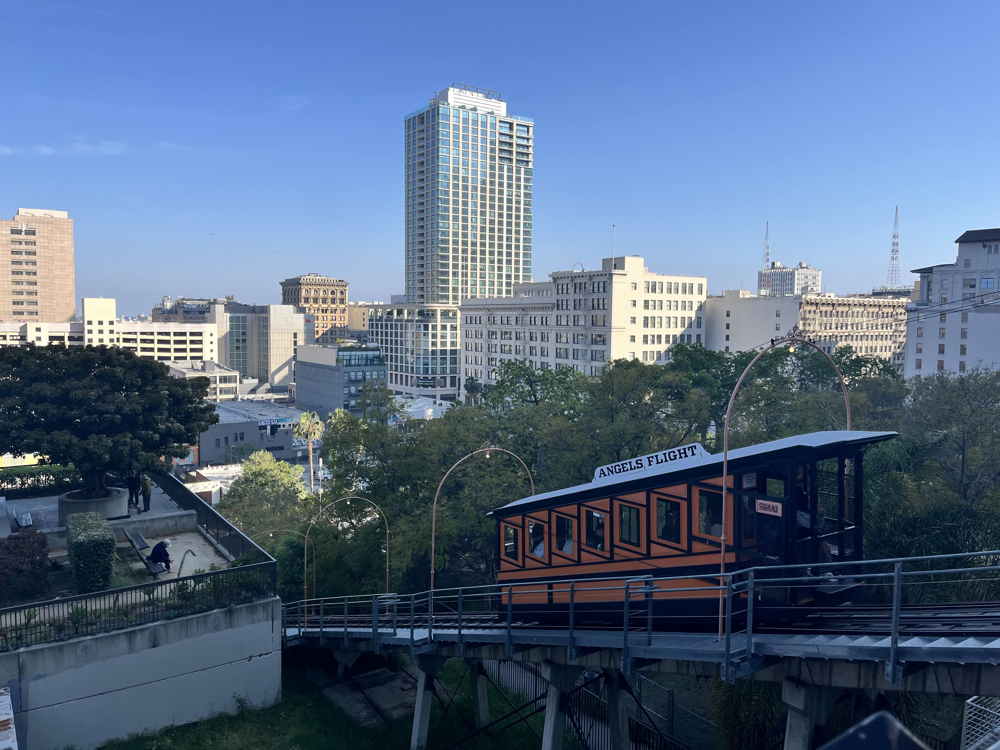

This is one of my most favourite temples because of the special experience that comes with it. I was able to get my endowment
here in Cebu, Phillippines. This was also during my mission and it was also during COVID, which meant that access to the temple was limited.
I was able to be blessed to enter into the temple during such a difficult time.
Hawaii
I am happy to be able to go to the Hawaii temple because it is one of the very first few temples in the infancy of the restored church. I am blessed to be able to
finally see an amazing temple that has blessd the lives of the countless people in Hawaii.
Manila
The Manila temple is one of the most popular temples to visit if you live in Malaysia as it is technically the closest temple in our
vicinity. Many members come here to obtain their endowment and enjoy the blessings of the temple.
I love travelling to cities!

LA
I travelled to Los Angeles over the break and took in many wonderful sights such as the art lights in downtown LA and Angel's flight. A little fun fact about Angel's flight
is that it's a really old tram ride that goes up and down. I specifically went there because I wanted to visit the place where the movie "La La Land" was filmed. They used the tram
ride as a sequence and for transition. You can check out the movie right here!
Utah
"I visited Utah over the Christmas break because I heard that snow in Utah is really amazing and as someone that hasn't experienced snow, I really wanted to get my hands on the cold weather and
the beautiful mountain top sights. It was a wonder to see and picture above was taken by me in one of the biggest mall's in Utah, City Creek Center. It looks very nice and I would very much enjoy going back
there again.
Korea
Korea was a place I never thought I will be able to travel to. Fortunately, I had the opportunity to visit Korea during a layover to Hawaii. I had a full 14 hour layover so I made the biggest
use of it. I travelled to many cities and stumbled upon an old church building that is decades old. It was an interesting sight to see and it was quite cold too as it was right after the winter season.
If I had the chance to go back, I will take it.